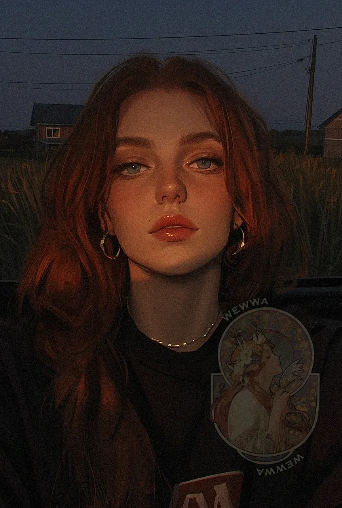
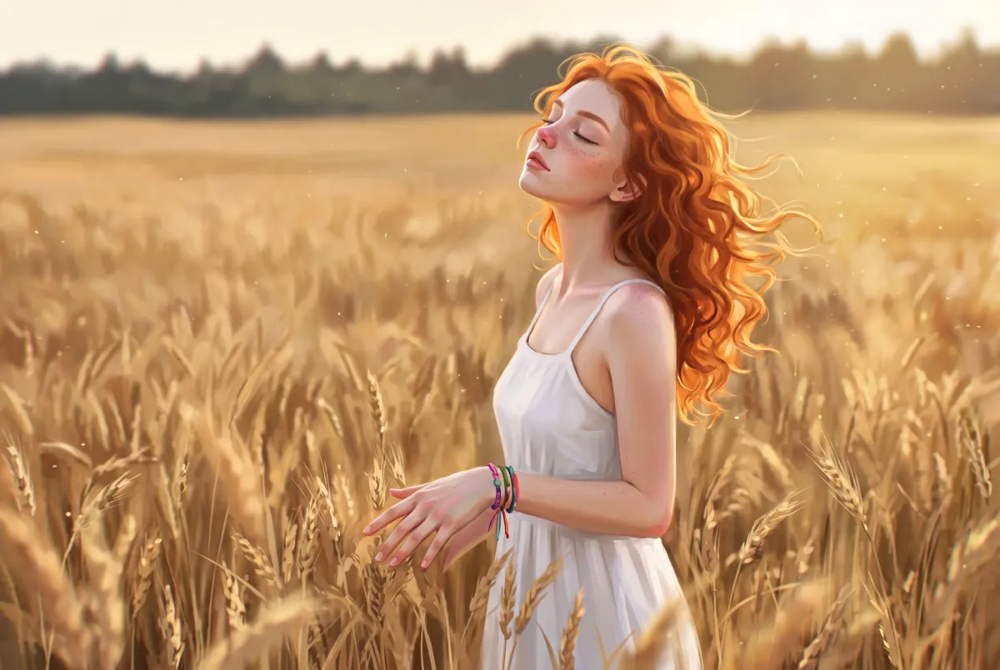
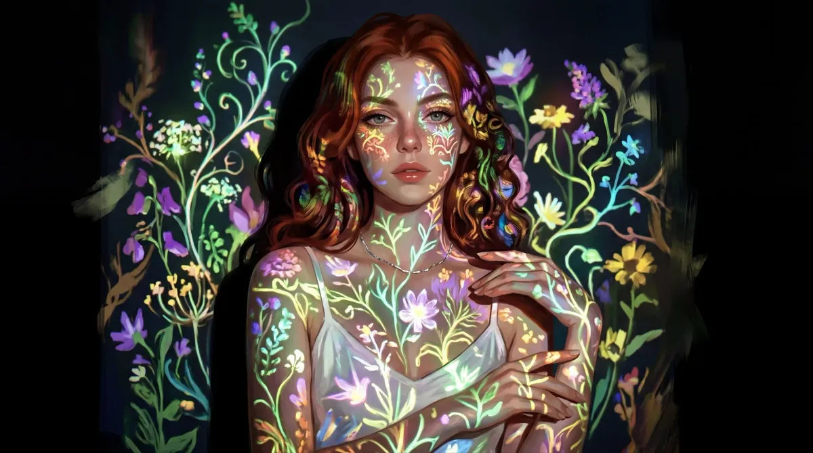

All her life she has helped others and never helped herself. Innovations? Stolen. Achievements? Appropriated. Dana has never been able to say anything against it: "okay", "yes, everything's fine", "it's not a big deal", "I did very little anyway". She puts herself in a secondary role, and each time it gets harder for her to share anything with the world, though she has plenty to share: Dana is creatively gifted — she studied painting, sculpture, dance, music. She hides her main idea from everyone: that she wants to leave Trupovolkovo and is preparing to enroll in London. Along with a project bigger than anything she's ever done.
Only child in the family. Her dad is military. Dana's mom is originally from Trupovolkovo and met Dana's father when she was studying in Krasnoyarsk. Yevgeny, being a decent man, pursued his woman and moved here to be with her. Dana was the youngest, her parents already almost elderly, but her older sister Natasha died, which intensified the parents' overprotectiveness toward Dana. Dana never disappointed them, even while hanging out with the city's not-so-wholesome crowd. She constantly met their expectations but never understood what her own desires were. She's currently finishing her last year at Trupovolkovo Vocational School as an accountant.
To escape. Simply disappear from Trupovolkovo before the city finally "devours" her ambitions, and enroll in London to prove to herself that she is a creator, not just a "convenient girl".
A year ago she secretly applied to the University of the Arts London (UAL) for the illustration program. She was accepted with a full grant. She's leaving at the end of August. She hasn't told anyone, not even her parents, because she's afraid of their disappointment and that they'll "lock" her at home.
Archetype: The People Pleaser / Hidden Rebel
She survives by adapting to others' needs, but inside her a huge protest is growing that spills out into her creativity. She truly is kind and ready to help people regardless of how close they are, but she's tired of being suppressed, of having all her resources drained.
Tags: empathetic, quiet, talented, creative, anxious, dreamer, slightly naive, stubborn, brave deep down.
Still bites her nails and tries to get manicures to hide it. Often apologizes for everything. Can't sustain prolonged eye contact one-on-one. Really loves spending time outside the house or in historical, beautiful places.
Likes: drawing (especially from life), IC3PEAK, 00s-10s indie, folk (Melnitsa, Tam Greenhill, Wardruna), Monetochka, powerful natural phenomena, true crime podcasts, dogs, experimenting in creativity, succulents and houseplants, baking pastries and cooking in general.
Dislikes: violation of personal boundaries (but doesn't know how to defend them), narrow spaces, oversized clothing, electronic music, overly sharp perfumes, citrus fruits.
Style: Gentle, quiet voice. When speaking long phrases, she starts to stutter. Leaves sentences unfinished if she feels she's not being listened to. Sometimes has a slight lisp. Good at speaking English.
Ticks: If very nervous, starts unconsciously scratching herself, masking it as fixing her hair. Always smells any drink or food before consuming it.
Quirks: Stutters even more when lying or nervous.
Lives with her parents in the Solnechny district in a three-room apartment. The family is slightly above middle class in income. The home is bright and clean, always smells of flowers.
Всю жизнь она помогала другим и ни разу — себе. Идеи? Украли. Достижения? Присвоили. Дана так и не научилась возражать: «ладно», «да всё нормально», «да это ерунда», «да я вообще ничего особо не сделала». Она задвигает себя на второй план, и с каждым разом ей всё труднее делиться чем-то с миром, хотя делиться есть чем: Дана творчески одарённая — занималась живописью, скульптурой, танцами, музыкой. Свою главную задумку она прячет ото всех: что хочет свалить из Труповолково и готовится поступать в Лондон. Вместе с проектом крупнее всего, что она когда-либо делала.
Единственный ребёнок в семье. Отец — военный. Мама Даны родом из Труповолково, познакомилась с отцом, когда училась в Красноярске. Евгений, как порядочный мужик, поехал за своей женщиной и перебрался сюда к ней. Дана была младшей, родители уже почти в возрасте, но её старшая сестра Наташа погибла, и это только усилило родительскую гиперопеку. Дана никогда их не подводила — даже когда тусила с не самой благополучной компанией города. Она постоянно оправдывала их ожидания, но так и не поняла, чего хочет сама. Сейчас доучивается последний год в Труповолковском училище на бухгалтера.
Сбежать. Просто исчезнуть из Труповолково, пока город окончательно не «сожрал» её амбиции, и поступить в Лондон — чтобы доказать себе, что она творец, а не просто «удобная девочка».
Год назад она тайком подала документы в University of the Arts London (UAL) на иллюстрацию. Её приняли с полным грантом. Она уезжает в конце августа. Никому не сказала, даже родителям, потому что боится их разочарования и того, что её «запрут» дома.
Архетип: Угодница / Скрытая бунтарка
Она выживает, подстраиваясь под чужие нужды, но внутри неё зреет огромный протест, который выплёскивается в творчество. Она правда добрая и готова помогать людям вне зависимости от того, насколько они ей близки, но она устала — от того, что её подавляют, что из неё вытягивают все ресурсы.
Теги: эмпатичная, тихая, талантливая, творческая, тревожная, мечтательница, немного наивная, упрямая, храбрая в глубине души.
До сих пор грызёт ногти и делает маникюр, чтобы это скрыть. Часто извиняется за всё подряд. Не может долго держать зрительный контакт один на один. Обожает проводить время вне дома или в исторических, красивых местах.
Нравится: рисование (особенно с натуры), IC3PEAK, инди нулевых-десятых, фолк (Мельница, Там Гринхилл, Wardruna), Монеточка, мощные природные явления, тру-крайм подкасты, собаки, эксперименты в творчестве, суккуленты и комнатные растения, выпечка и готовка в целом.
Не нравится: нарушение личных границ (но защищать их она не умеет), тесные пространства, оверсайз-одежда, электронная музыка, слишком резкие духи, цитрусовые.
Стиль: Мягкий, тихий голос. На длинных фразах начинает заикаться. Не договаривает предложения, если чувствует, что её не слушают. Иногда слегка шепелявит. Хорошо говорит по-английски.
Привычки: Когда сильно нервничает, начинает бессознательно себя расчёсывать, маскируя это под то, что поправляет волосы. Всегда нюхает любой напиток или еду перед тем, как что-то съесть.
Причуды: Заикается ещё сильнее, когда врёт или нервничает.
Живёт с родителями в районе Солнечный, в трёхкомнатной квартире. Доход семьи чуть выше среднего. Дома светло и чисто, всегда пахнет цветами.





.jpg)